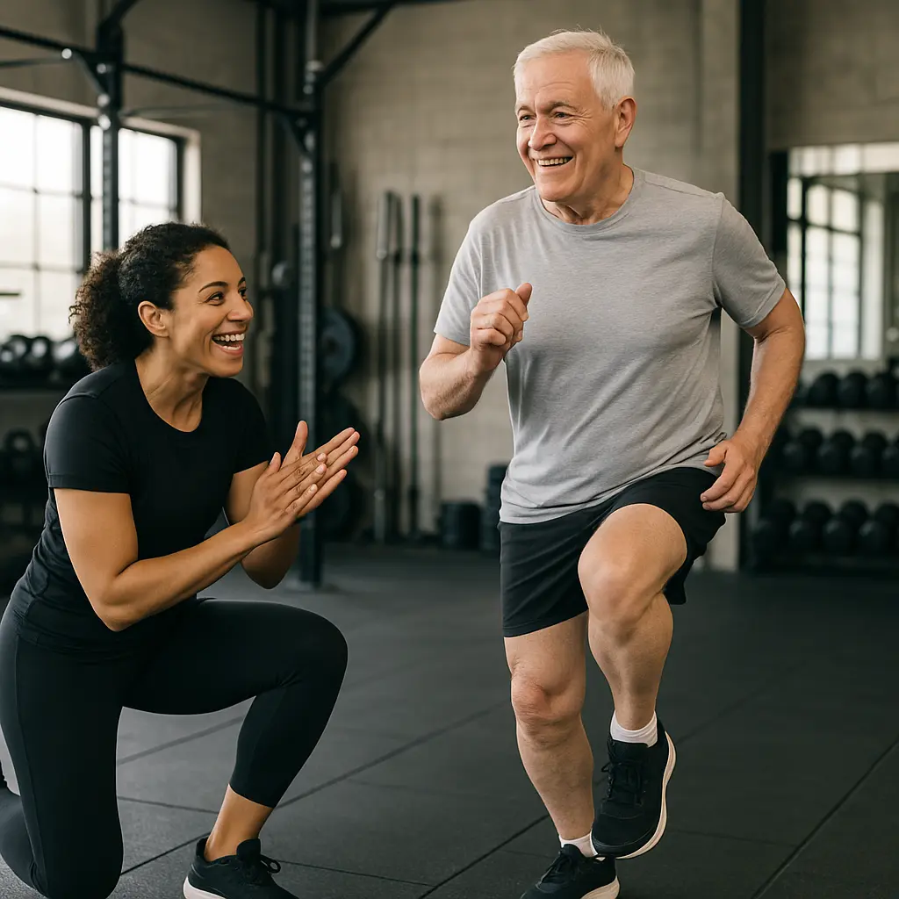

Home Fitness Guide
Privacy Policies
Terms of Service
PDFs
About
Contact
Affiliates
Nutrition
Sleep
Products
Fitness
Supplements
Weight Loss
Your Complete Guide To Home Fitness, Nutrition & Gear
Search
Best Home Workout Equipment 2025 - Ultimate Guide To Build Strength Fast
Best Healthy Meals For Better Fitness
How to Lose Belly Fat Fast at Home?
Best Healthy Recipe Books to Buy in 2025
How to Lose Weight Fast: Do's and Don'ts
How Many Calories?
How to Calculate Your TDEE
Hybrid Training
How to Do Aggressive Cut Properly
Lean vs Clean Bulk
Best High-Calcium Recipes
Calcium Calculator
Mindful Eating
Increase Your Height
Stretching After Workouts
Understanding Macros: The Key to Optimizing Your Diet
How to Track Your Fitness Progress Like a Pro
Exercise Snacking
Japanese Walking Method
How to Build Muscles in a Calorie Deficit
Stress Management Techniques
Everything About VO2 Max
Endomorph Body Type
How to Fall Asleep in 30 Seconds
How to Do Body Recomposition
Can You Build Muscle With BodyWeight Exercises Only?
Backyard Chicken Coop Guide
Best Waterproof Fitness Trackers 2025
Why Is Everyone Doing Cold Plunges Now? Benefits & Risks Explained
Transform Your Home Workouts in 2025 with These Elite Fitness Essentials
How Drinking Water Boosts Weight Loss: Proven Benefits and Tips
Workout and Mobility Plans PDFs
How to Prevent Injuries During Home Workout
How Calories Work
BMR Calculator
How Much Protein Do You Really Need?
How Walking Can Be an Exercise
Shredded Summer Physique
The Ultimate Guide to Osteoporosis
Best Exercises for Bone Health
Exercise Benefits
Best Natural Supplements
Mobility Exercises
How to Maintain Fitness While Traveling
The Best Supplements for Joint Health and Injury Recovery
AI Fitness Technology 2025
Creatine: Benefits, Uses, & Possible Side Effects
Mental Fitness
How to Sleep Better to Gain More Muscles
15 Exercises That Burn The Most Calories
Ectomorph Body Type
Mesomorph Body Type
How Long Does It Take to Get in Shape?
Complete Guide to Cutting Without Losing Muscle

How to Start HIIT Safely?
How to Do Japanese Interval Walking: Better Than 10,000 Steps
The Ultimate 15-Minute Home Workout Plan (No Equipment Needed)